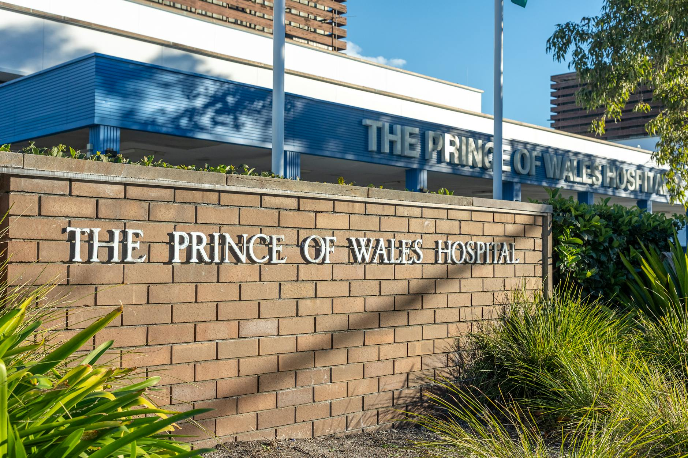

Executive Summary
A regional healthcare network sought to streamline patient appointment scheduling and insurance verification. By implementing an AI-driven workflow, they reduced manual administrative work, improved patient satisfaction, and accelerated revenue collection.
The system integrates with existing scheduling software to coordinate staff availability, automatically reminds patients of upcoming visits, and verifies coverage before appointments.
About the Client
The network operates six clinics and two hospitals, serving thousands of patients each month. Before automation, staff juggled phone calls, emails, and paper forms to coordinate appointments and confirm insurance coverage.
The organization provides a mix of primary care and specialty services. Multiple practice management systems made it difficult to maintain a single view of patient schedules and insurance requirements.
The In-Depth Challenge
Manual processes often resulted in double bookings and delayed approvals from insurers. Patients had to wait on hold to reschedule appointments or clarify coverage. These inefficiencies increased no-shows and slowed down claims processing.
Staff spent hours each day confirming eligibility by phone, which diverted attention from patient care. Insurance cards were frequently scanned and emailed, creating security risks.

Technical Deep Dive
ExpertTech built a secure scheduling assistant using conversational AI integrated with the existing EHR system. Insurance documents were processed with OCR and validated against payer APIs. A rules engine handled edge cases such as referrals and prior authorizations.
All interactions flow through a HIPAA-compliant gateway that logs every action. Administrators review summaries of conversations to fine tune the assistant and add new coverage rules.
Below is a simplified architecture diagram of the solution.
Quantifiable Results & ROI
Within two months, automated appointment reminders decreased no-shows by 20%. Insurance verification time dropped from days to minutes, which accelerated revenue by $1.2M in the first year.
Staff productivity improved as well: the scheduling team spends 30% less time on the phone, allowing them to assist more patients per day.
Client Testimonial
"With ExpertTech's automation platform, our staff can focus on patient care rather than paperwork." – Director of Operations
The director reports that employees feel less stressed knowing insurance is verified ahead of appointments.